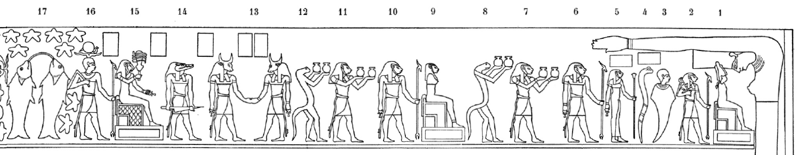
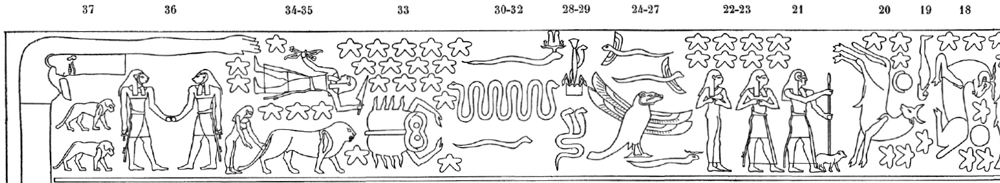
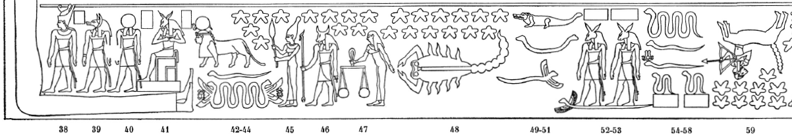
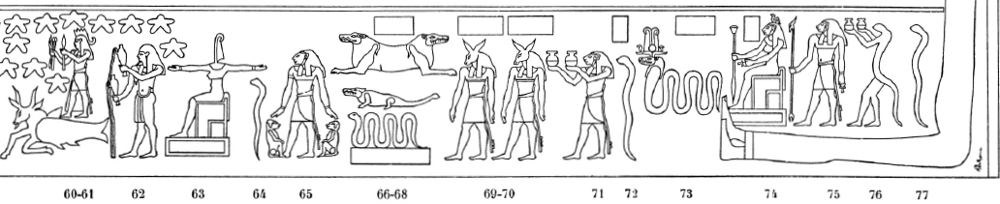

Row E (442-448)
Esna 443
- Location: Travée E
- Date: Unknown
-
Hieroglyphic Text
- Bibliography: Von Lieven 2000, pp. 148-152; Mendel 2022, pp. 454-457.
These reliefs contain a combination of Zodiac signs, planets,62 decans, and “arrows” of Bastet-Sekhmet,63 all from the northern sky. Only traces of their captions are preserved in paint, but they can be identified based on parallels on other astronomical scenes, for which see Mendel 2022, pp. 454-457.
For the Zodiac signs from this table, see already Sauneron, Ménassa 1969, p. xiv. One might compare the similar representations from the round zodiac of Dendera: Aubourg 1995, p. 4, and photos from the Louvre. For general interest, I note some of the highlights below.
Right (West)

1-12: Decans and pseudo-decans
13-14: 2nd and 1st arrows of Bastet-Sakhmet
15-16: Two more decans
17: Pisces
Left (East)

18: Aries
19: Another decan
20: Taurus and the moon
21: Another decan (“the shepherd”)
22-23: Gemini
24-32: Various serpents and a crocodile-headed, four-winged bird
33: Cancer
34: Jupiter
35: Leo, followed by Coma Berenices?
36-37: 4th arrow
Esna 444
- Location: Travée E
- Date: Marc[us Aurelius?]
- Bibliography: Von Lieven 2000, pp. 152-154; Pl. 7; Mendel 2022, pp. 457-458
NB: This text was only painted, and Sauneron did not record any signs in his edition. Preliminary copies were made by Von Lieven 2000, Pl. 7, and Mendel 2022, p. 457, both based on photographs. Presumably more signs will be revealed when this portion of the ceiling is fully cleaned. At present, the text is recorded only in fragments.
The inscription mentions various epithets of local goddesses, including Menhit, Nebtu, and Neith. Several words appear to be spelled with multiple uraeus or sky signs, just like in the hymn to Neith from column 13: Esna III, 331.
Esna 445
- Location: Travée E
- Date: Unknown
-
Hieroglyphic Text
- Bibliography: Von Lieven 2000, pp. 154-158; Mendel 2022, pp. 459-462.
These reliefs contain a combination of Zodiac signs, planets,64 decans, and “arrows” of Bastet-Sekhmet,65 all from the southern sky. Only traces of their captions are preserved in paint, but they can be identified based on parallels on other astronomical scenes, for which see Mendel 2022, pp. 454-457.
For the Zodiac signs from this table, see already Sauneron, Ménassa 1969, p. xiv. One might compare the similar representations from the round zodiac of Dendera: Aubourg 1995, p. 4, and photos from the Louvre. For general interest, I note some of the highlights below.
Left (West)

38-41: 5th Arrow
42-44: Tutu (chief of the 7 Arrows) above two serpents
45: Virgo holding a grain of wheat (the star “Spica”)
46: Saturn
47: Libra
48: Scorpio
49-51: crocodile and serpents
52-53: 7th Arrow
54-58: Serpents
59: Sagittarius
Right (East)

60-61: Capricorn (below) beneath Mars (above)
62: Aquarius-Hapi
63-68: More decans and pseudo-decans
69-70: 6th Arrow
71-77: More decans
Esna 446
- Location: Travée E, West frieze
- Date: Unknown
-
Hieroglyphic Text
- Bibliography: None
Carving never finished.
Esna 447
- Location: Travée E, East frieze
- Date: Unknown
-
Hieroglyphic Text
- Bibliography: None
Carving never finished.
Esna 448
- Location: Travée E
- Date: Domitian
- Hieroglyphic Text
1ʿnḫ nṯr nfr
ḫwzỉ Ỉwny.t
mỉ ȝḫ.t n.t p.t
qȝ.tw r Nw.t
ḏsr.tw r nỉw.wt spȝ.wt
zȝ-Rʿ
(twmtyns nty-ḫwỉ)|
1 Live the good god,
who constructs Iunyt
like the Akhet of the sky:
higher than Nut,
most sacred of cities and nomes.
The Son of Re,
(Domitian Augustus)|
2mry Mnḥy.t wr.t
nb.t ḫnt-tȝ
šps.t ʿȝ.t
mr.t Ptḥ
wsr.t nn ḥr-ḫw=s
nsr.t 3tp.t n Rʿ
wr pʿy.t
sḫm hh=s
ỉr.t-Rʿ
sḥḏ(.t) tȝ.wy
štȝ.t ḫw.tw ḏs=s
2 Beloved of Menhyt the great,
Lady of Khent-ta,
the great august one,
beloved of Ptah,
mighty one, all by herself.
The flame 3 atop Re,
great of fire,
whose blaze is powerful.
The Eye of Re,
who illumines the two lands,
the mysterious-serpent who protects herself.
4mry Nb.t-ww
nb(.t) tȝ-sn.t
nbw.t ḥnw.t sḫ.t
Rnnwt.t sḫpr(.t) ỉḫt nb.w
m s.t=s
4 Beloved of Nebtu,
Lady of Esna,
the Golden, Mistress of the Field,
Renenutet who produces all offerings
in her place.